iOS 18 and Xcode 16 New Feature

Here are some updates and demos for iOS 18 and Xcode 16 recorded
Summary
New feature
iOS 18 Preview
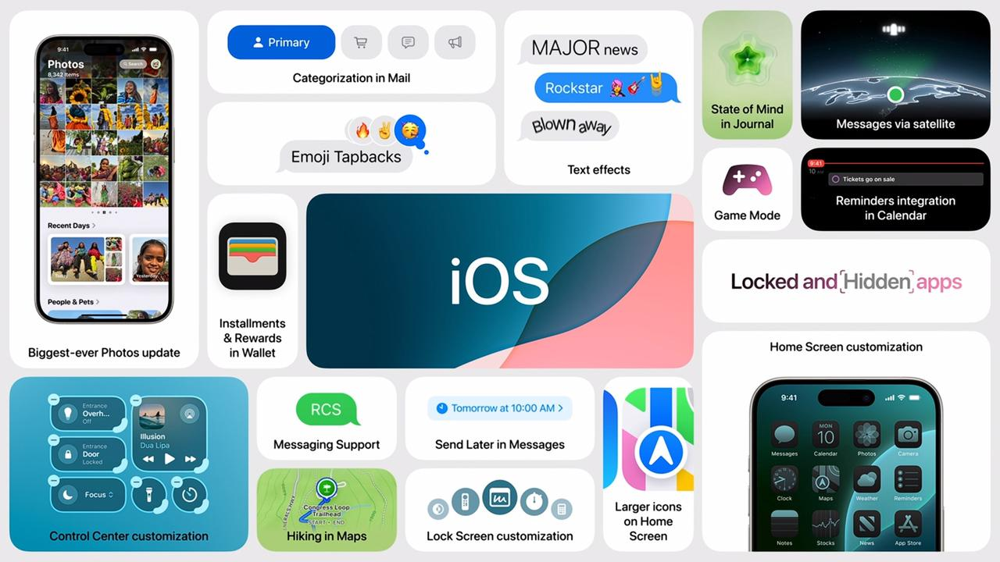
Release Note
iOS 18 Release Note
Xcode 16 Release Note
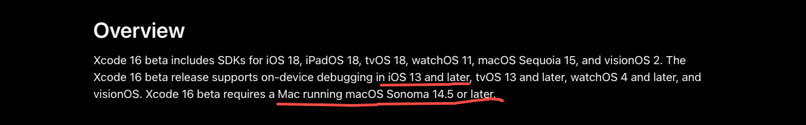
All Technologies Updates
What’s new in UIKit
Automatic trait tracking
Leverage automatic trait usage tracking inside key update methods such as layoutSubviews(), eliminating the need for manual trait change registration and invalidation.
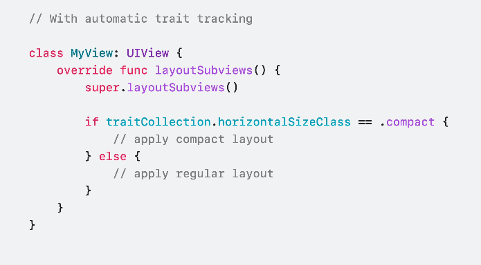
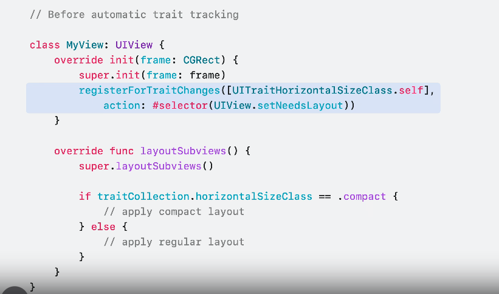
List improvements
Take advantage of enhancements to UIListContentConfiguration, which now automatically updates to match the style of the containing list by using the new UIListEnvironment trait from the trait collection, removing the need to instantiate a configuration for a specific list style yourself.
func configurations(for location: FileLocation) ->
(UIListContentConfiguration, UIBackgroundConfiguration) {
var contentConfiguration = UIListContentConfiguration.cell()
let backgroundConfiguration = UIBackgroundConfiguration.listCell()
contentConfiguration.text = location.title
contentConfiguration.image = location.thumbnailImage
return (contentConfiguration, backgroundConfiguration)
}
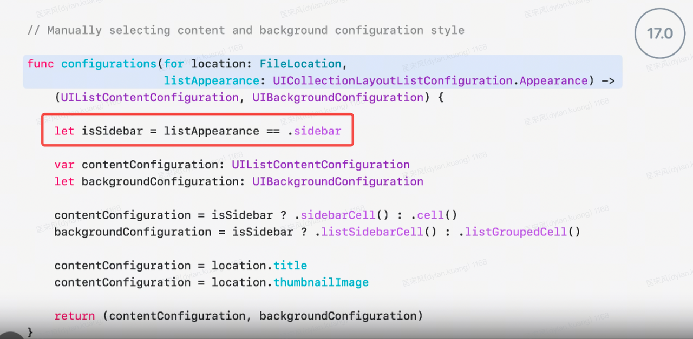
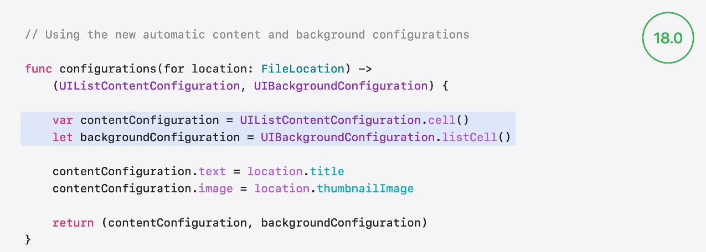
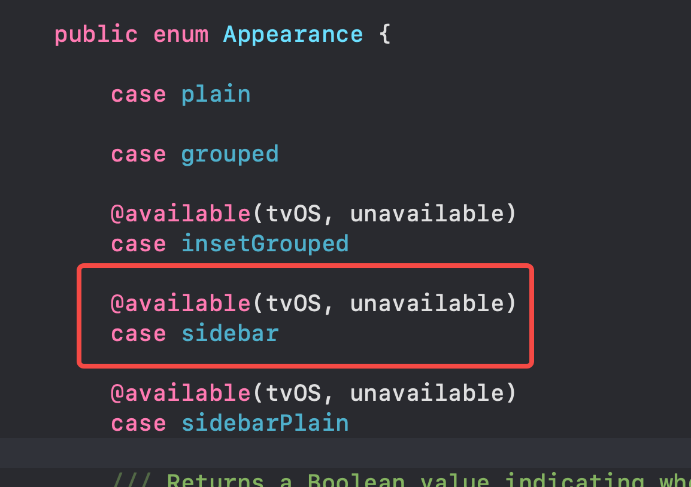
UICalendarSelectionWeekOfYear
Select a specific week of the year in UICalendarView using the new UICalendarSelectionWeekOfYear selection option.
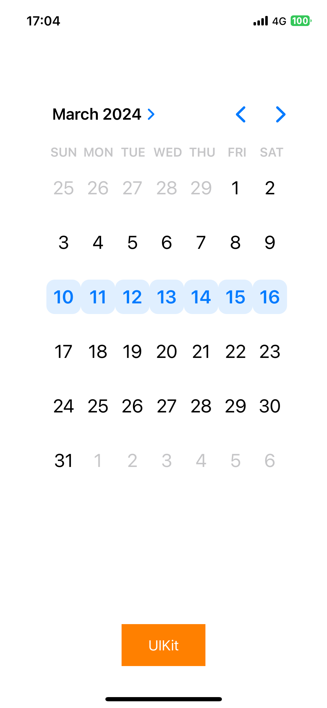
// Set the selection behavior.
let selection = UICalendarSelectionWeekOfYear(delegate: self)
calendarView.selectionBehavior = selection
// Set the 11th week in the year 2024.
selection.selectedWeekOfYear = DateComponents(
calendar: Calendar(identifier: .gregorian),
weekOfYear: 11,
yearForWeekOfYear: 2024)
Symbol animations
Add repeat, wiggle, breathe, and rotate effects to SF Symbols.
VStack{
Spacer()
Image(systemName: "arrow.down.circle.fill")
.resizable()
.frame(width: 100, height: 100)
.symbolEffect(.wiggle)
.symbolRenderingMode(.hierarchical)
.foregroundColor(.purple)
Spacer()
Image(systemName: "figure.skiing.crosscountry.circle.fill")
.resizable()
.frame(width: 100, height: 100)
.symbolEffect(.breathe)
.symbolRenderingMode(.hierarchical)
.foregroundColor(.indigo)
Spacer()
Image(systemName: "figure.skiing.crosscountry.circle.fill")
.resizable()
.frame(width: 100, height: 100)
.symbolEffect(.rotate)
.symbolRenderingMode(.monochrome)
.foregroundColor(.indigo)
Spacer()
}
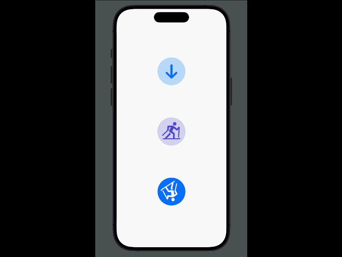
Navigation
Evolve your document launch experience
Showcase your app and its unique identity with a new, customizable launch design for document-based apps. In UIKit, define launchOptions on your UIDocumentViewController.
- SwiftUl
- Recompile with the iOS 18 SDK
- Add a DocumentGroupLaunchScene
- UlKit
- Make UIDocumentViewController the root
- Apply customizations to the launchOptions
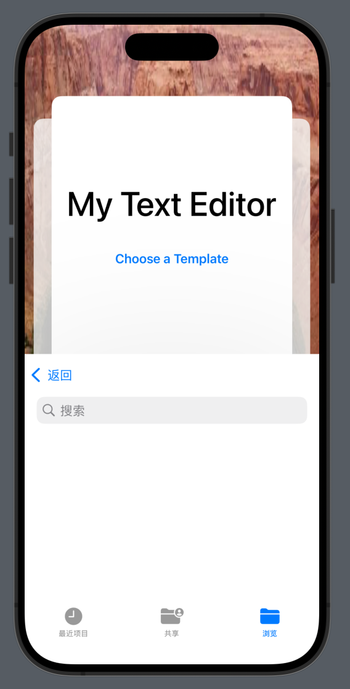
// Customize launch options.
launchOptions.title = "My Text Editor"
launchOptions.background.backgroundColor = .darkGray
// Provide an action for the secondary action.
let templateAction = LaunchOptions.createDocumentAction(withIntent: .template)
templateAction.title = "Choose a Template"
launchOptions.secondaryAction = templateAction
// Update the background
launchOptions.background.image = UIImage(named: "icon")
UITab and TabSidebar
Make your app’s navigation more immersive by adopting the new tab bar on iPad. If your app presents a rich hierarchy of tab items, set the mode to UITabBarController.Mode.tabSidebar to automatically switch between the tab bar and sidebar representations. In SwiftUI, use sidebarAdaptable.
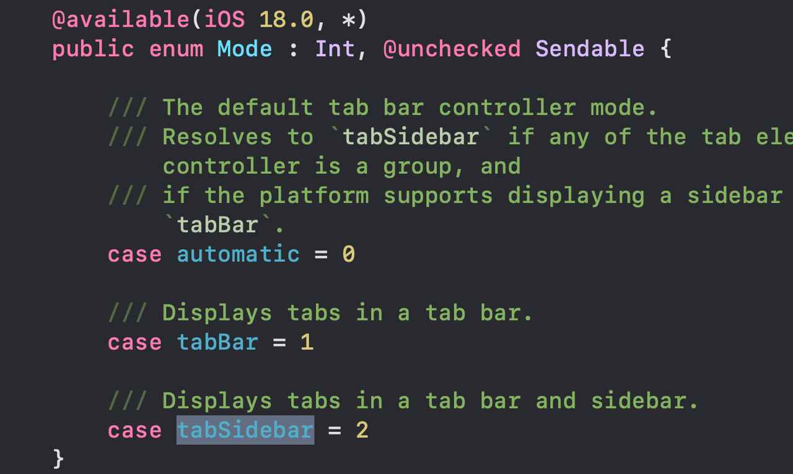
-
UITabBarController adds a new label type UITab, which can set title, subtitle, image, badgeValue, etc.
-
UITabBarControllerDelegate adds multiple UITab-related delegate methods.
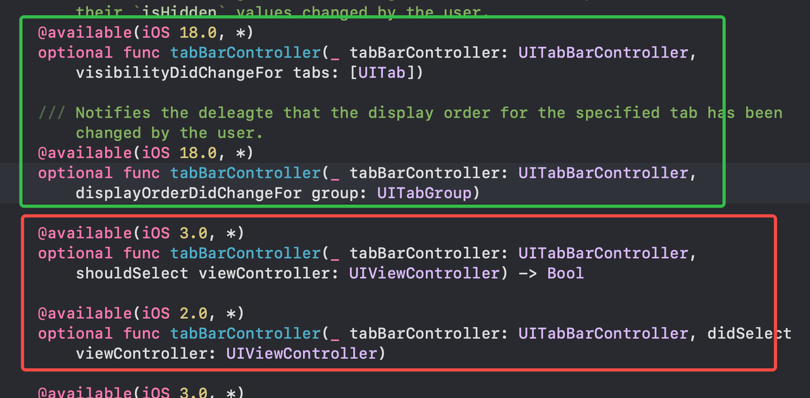
Demo
tabBarController.mode = .tabSidebar
// Assign an array of tabs.
tabBarController.tabs = [
UITab(title: "First",
image: UIImage(systemName: "1.circle"),
identifier: "First Tab") { _ in
// Return the view controller that the tab displays.
firstHostingController
},
UITab(title: "Second",
image: UIImage(systemName: "2.circle"),
identifier: "Second Tab") { _ in
// Return the view controller that the tab displays.
secondHostingController
},
UITab(title: "Three",
image: UIImage(systemName: "3.circle"),
identifier: "Three Tab") { _ in
// Return the view controller that the tab displays.
DocumentViewController()
},
]
iPhone and iPad demo
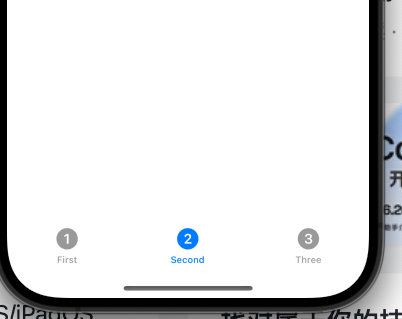
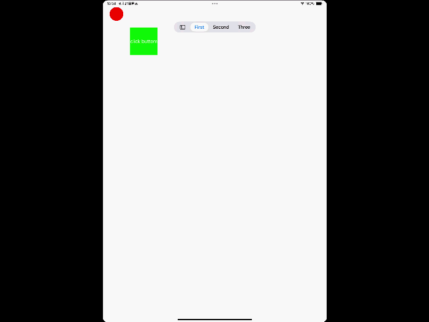
PreferredTransition
Transition between views in a way that feels fluid and consistent using a systemwide zoom transition. In UIKit, configure your view controller’s preferredTransition to zoom(options:sourceViewProvider:). In SwiftUI, use zoom(sourceID:in:).
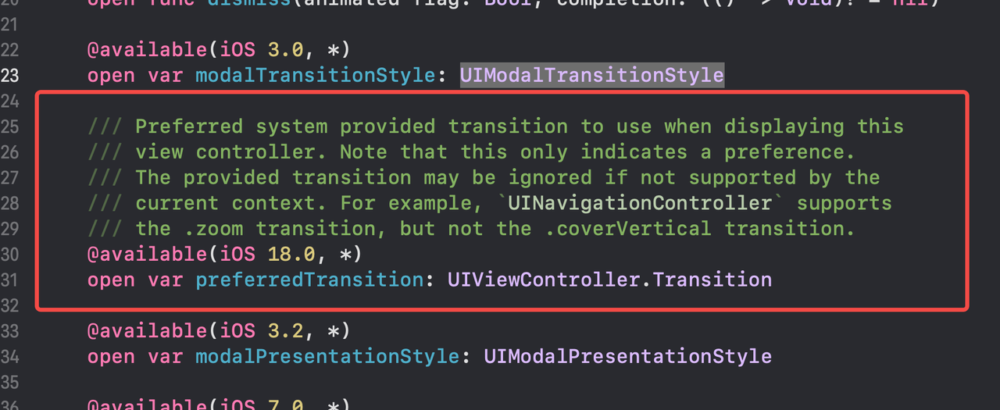
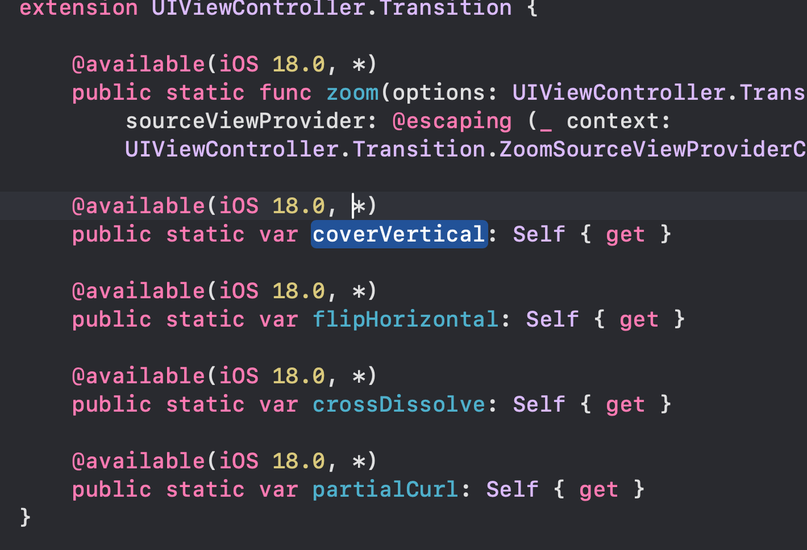
Framework interoperability
UlKit and SwiftUl interoperability
Use SwiftUI animations from AppKit and UIKit to create a consistent animation experience across apps that use multiple UI frameworks. In UIKit, use animate(with:changes:completion:). In AppKit, use animate(with:changes:completion:).
- Animations
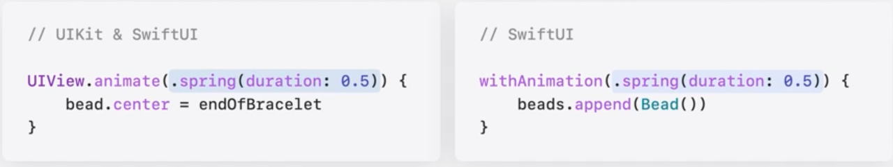
// Animate changes to one or more views using the specified SwiftUI animation. Animations performed using this method can be smoothly retargeted while preserving velocity, just like animations in SwiftUI views.
Task {
// Begins an animation to move the view to a new location.
UIView.animate(with: .spring(duration: 1.0)) {
myView.center = CGPoint(x: 200, y: 200)
}
try await Task.sleep(for: .seconds(0.5))
// Retargets the running animations to move the view to a different location.
UIView.animate(with: .spring) {
myView.center = CGPoint(x: 100, y: 400)
}
}
UIKit and UISwift Animations
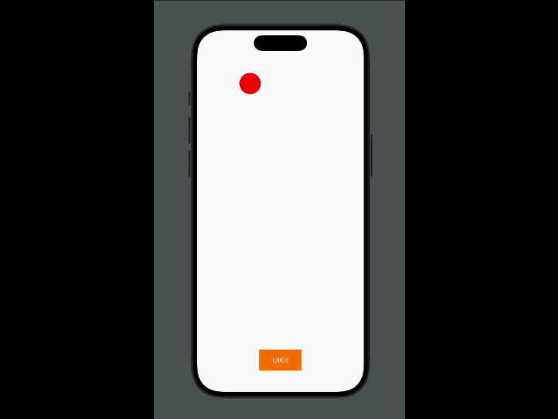
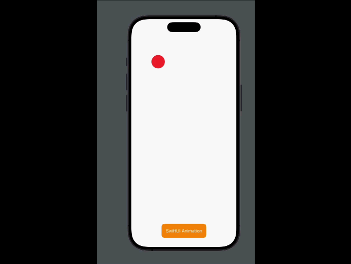
- Gesture recognizers
switch gesture.state {
case .changed:
UIView.animate(.interactiveSpring) {
bead.center = gesture.translation
}
case .ended:
UIView.animate(.spring) {
bead.center = endOfBracelet
}
}
Update link
With a UI update link, you can follow the progress of each UI update and express preferences about how those updates happen. Use a UI update link when you need precise and predictable control over the UI update process.
UIUpdateLink similar to CADisplayLink
More features
- View tracking
- Low latency applications
- Better performance
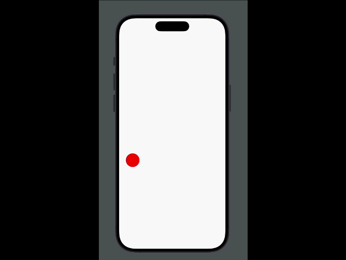
let updateLink = UIUpdateLink(
view: view,
actionTarget: self,
selector: #selector(update)
)
updateLink.requiresContinuousUpdates = true
updateLink.isEnabled = true
@objc func update(updateLink: UIUpdateLink,
updateInfo: UIUpdateInfo) {
view.center.y = sin(updateInfo.modelTime)
* 100 + view.bounds.midY
}
Sensory feedback
Use canvas feedback to indicate when a drawing event occurs, such as an object snapping to a guide or ruler. When using Apple Pencil Pro with a compatible iPad, this type of feedback can provide a tactile response.
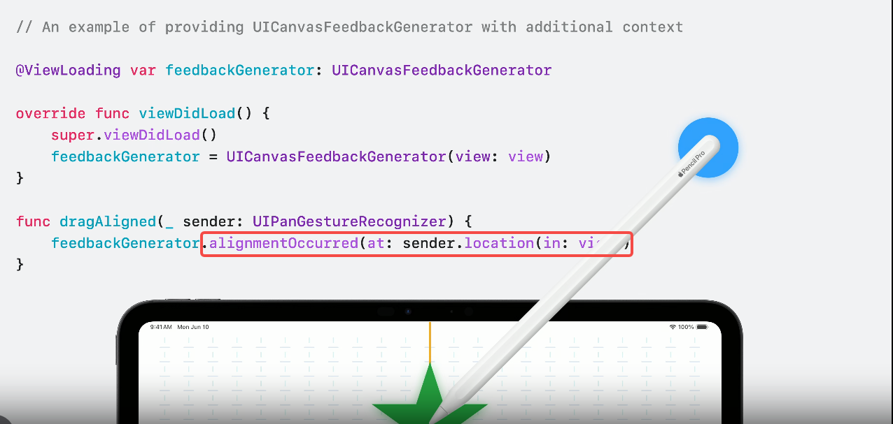
Text improvements
Using new attributes for highlight
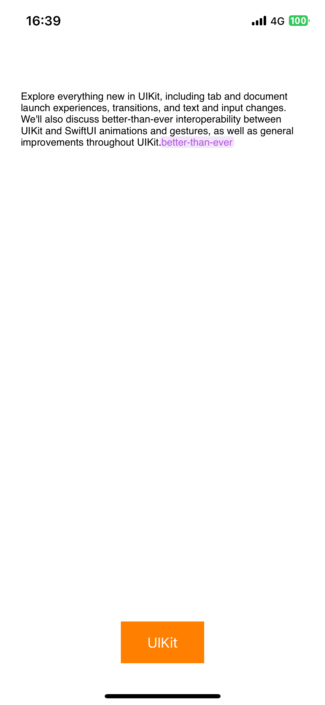
var attributes = [NSAttributedString.Key: Any]()
// Highlight style
attributes[.textHighlightStyle] =
NSAttributedString.TextHighlightStyle.default
// Highlight color scheme
attributes[.textHighlightColorScheme] =
NSAttributedString.TextHighlightColorScheme.purple
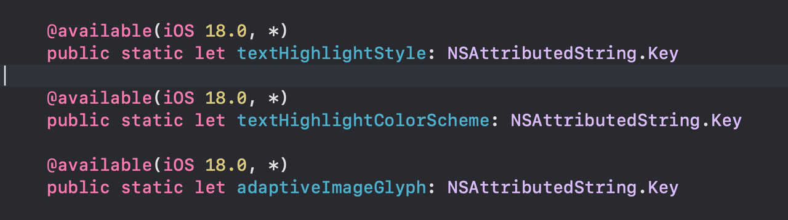
What’s new in location authorization
Location Authorization 2.0. Learn new recommendations and tips for getting the authorization you need, and new diagnostics that notify you when you’re not meeting authorization goals.
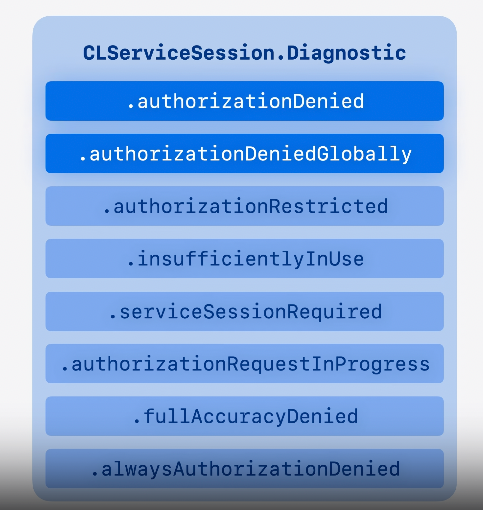
// Iterating liveUpdates to reflect current location
Task {
let updates = CLLocationUpdate.liveUpdates()
for try await update in updates {
if let loc = update.location {
updateLocationUI(location: loc)
}
}
}
Demo:
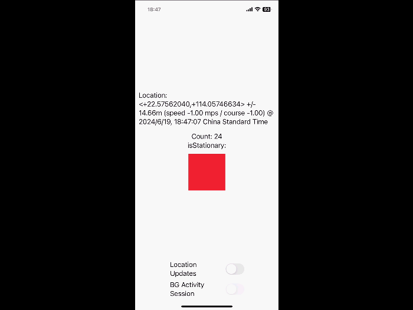
AccessorySetupKit
Elevate your accessory setup experience with AccessorySetupKit. Display a beautiful pairing dialog with an image of your Bluetooth or Wi-Fi accessory — no trip to the Settings app required. Discover how to improve privacy by pairing only your app with an accessory. And learn how you can migrate existing accessories so they can be managed by AccessorySetupKit.
Demo
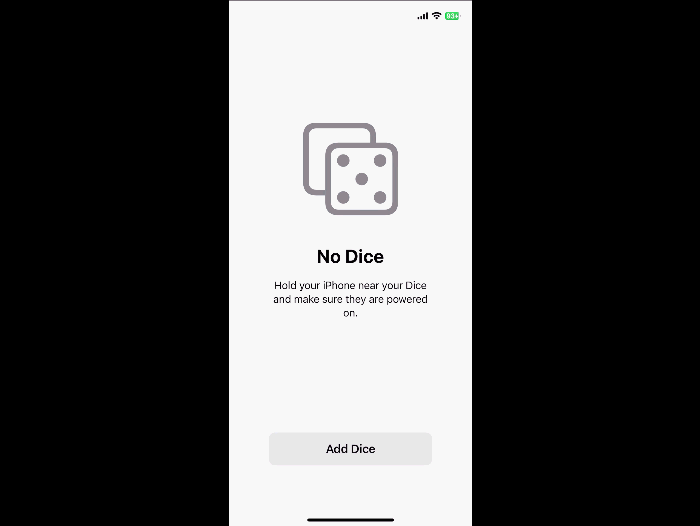
What’s new in Swift
Consume noncopyable types in swift
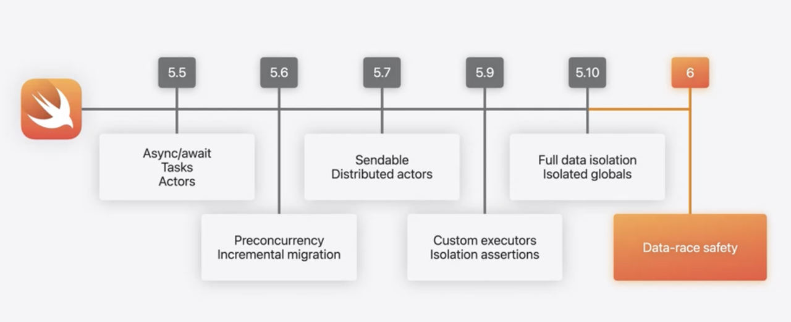
Data-race safety
Swift 6 improves concurrency checking further, and the Swift team say it “removes many false-positive data-race warnings” that were present in 5.10. It also introduces several targeted changes that will do wonders to make concurrency easier to adopt
Swift 6 before and now display
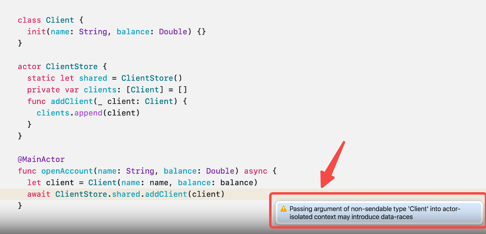
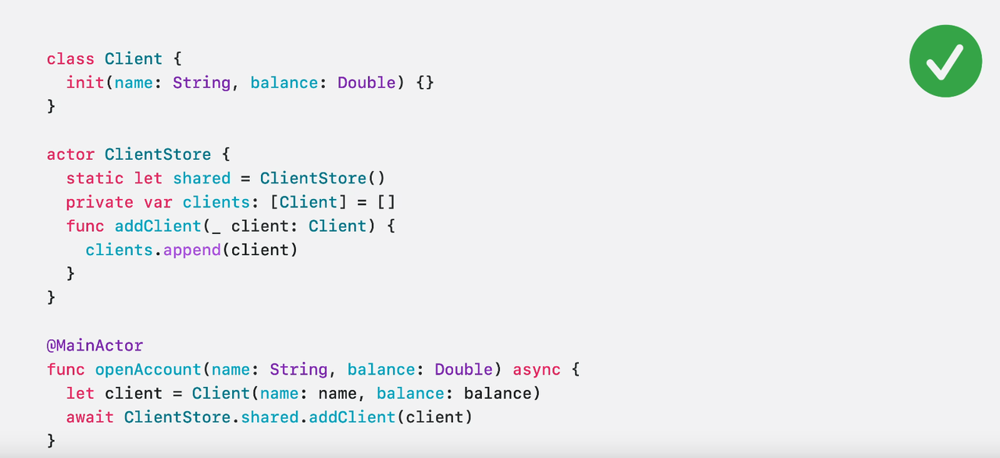
Add Collection Operations on Noncontiguous Elements
Operate on noncontiguous ranges in collections using RangeSet and DiscontiguousSlice.
struct ExamResult {
var student: String
var score: Int
}
// We can get a RangeSet containing the indices of all students who score 85% or higher like this
let results = [
ExamResult(student: "Eric Effiong", score: 95),
ExamResult(student: "Maeve Wiley", score: 70),
ExamResult(student: "Otis Milburn", score: 100)
]
// And if we wanted to get access to those students, we can use a new Collection subscript:
let topResults = results.indices { student in
student.score >= 85
}
for result in results[topResults] {
print("\(result.student) scored \(result.score)%")
}
Access-level modifiers on import declarations
Adds the ability to mark import declarations with access control modifiers, such as private import SomeLibrary.
Upgrades for noncopyable types
In that code, the compiler enforces that message.read() can only ever be called once, because it consumes the object.
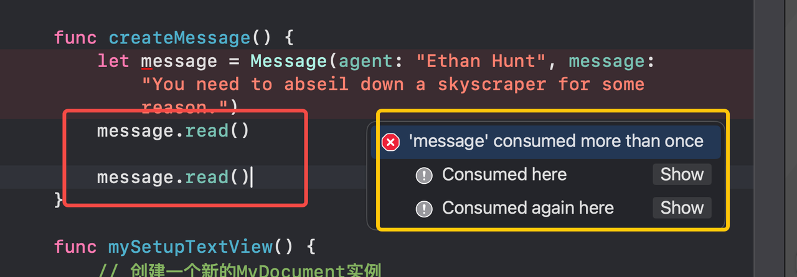
struct Message: ~Copyable {
var agent: String
private var message: String
init(agent: String, message: String) {
self.agent = agent
self.message = message
}
consuming func read() {
print("\(agent): \(message)")
}
}
func createMessage() {
let message = Message(agent: "Ethan Hunt", message: "You need to abseil down a skyscraper for some reason.")
message.read()
}
Typed throws
enum IntegerParseError: Error {
case nonDigitCharacter(String, index: String.Index)
}
func parse(string: String) throws -> Int {
for index in string.indices {
// ...
throw IntegerParseError.nonDigitCharacter(string, index: index)
}
}
do {
let value = try parse(string: "1+234")
}
catch let error as IntegerParseError {
// ...
}
catch {
// error is 'any Error'
}
func parse(string: String) throws -> Int {
//...
}
func parse(string: String) -> Int {
//...
}
Swift 6
func parse(string: String) throws(IntegerParseError) -> Int {
for index in string.indices {
// ...throw IntegerParseError.nonDigitCharacter(string, index: index)
}
}
do {
let value = try parse(string: "1+234")
}
catch {
// error is 'IntegerParseError'
}
func parse(string: String) throws(any Error) -> Int {
//...
}
func parse(string: String) throws(Never) -> Int {
//...
}
Meet Swift Testing
Introducing Swift Testing: a new package for testing your code using Swift. Explore the building blocks of its powerful new API, discover how it can be applied in common testing workflows, and learn how it relates to XCTest and open source Swift.
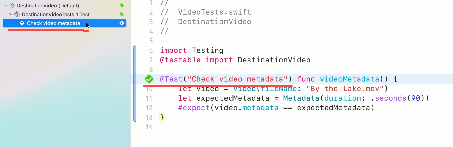
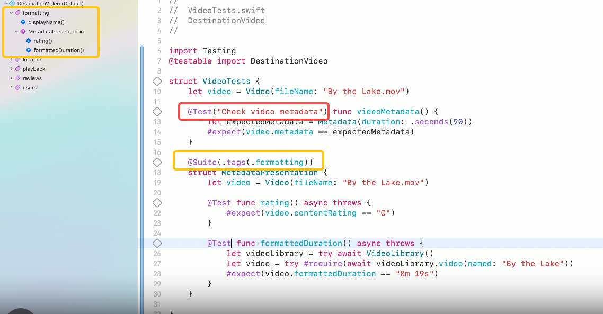
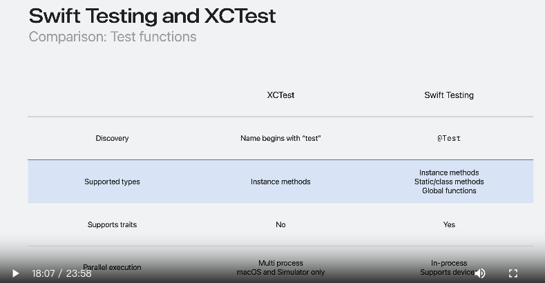
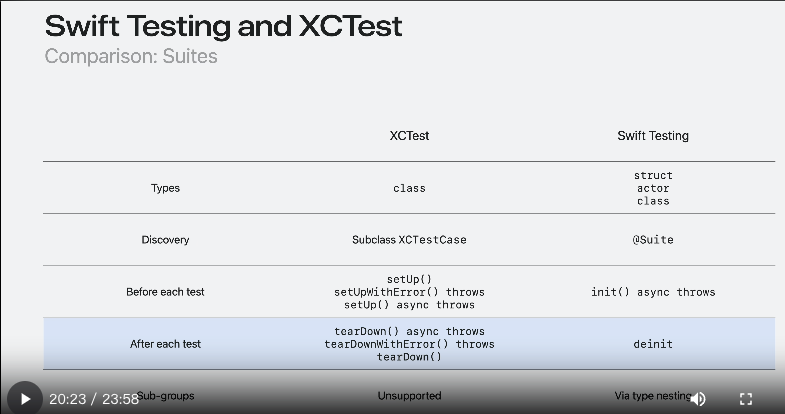
Swift Charts
The plot thickens! Learn how to render beautiful charts representing math functions and extensive datasets using function and vectorized plots in your app. Whether you’re looking to display functions common in aerodynamics, magnetism, and higher order field theory, or create large interactive heat maps, Swift Charts has you covered.
- Added new plot API variants at iOS 18
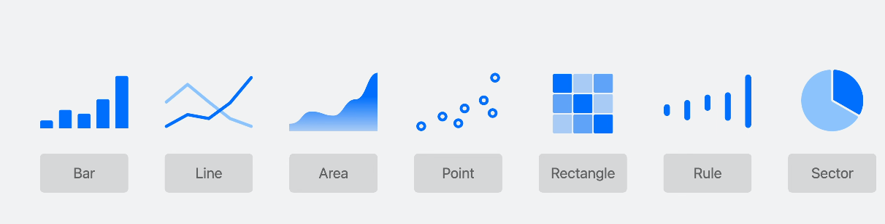
- Charts demo
- Source Demos
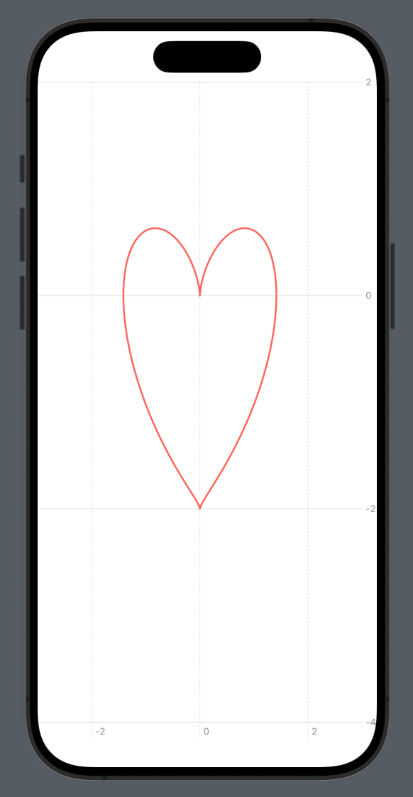
Chart {
LinePlot(x: "x", y: "y", t: "t", domain: -.pi ... .pi) {
t in
let x = sqrt(2) * pow(sin(t), 3)
let y = cos(t) * (2 - cos(t) - pow(cos(t), 2))
return (x, y)
}
.foregroundStyle(.red)
.opacity(0.8)
}
.chartXScale(domain: -3 ... 3)
.chartYScale(domain: -4 ... 2)
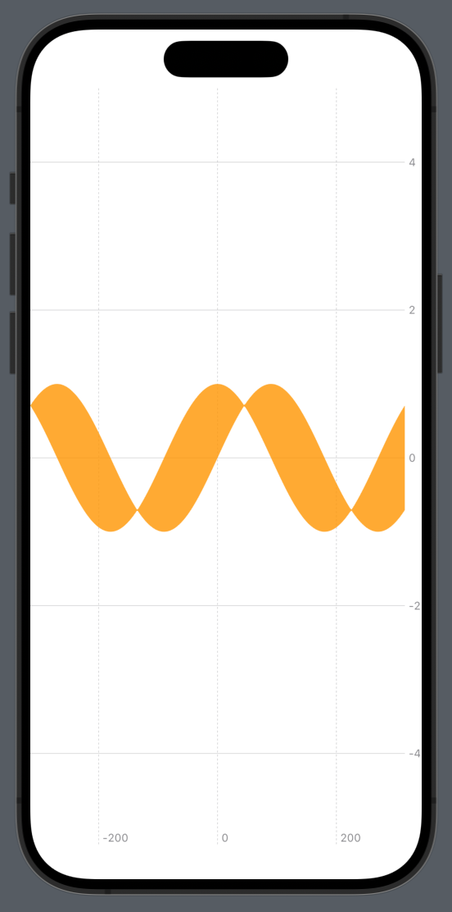
Chart {
AreaPlot(x: "x", yStart: "cos(x)", yEnd: "sin(x)") { x in
(yStart: cos(x / 180 * .pi),
yEnd: sin(x / 180 * .pi))
}
.foregroundStyle(.orange)
.opacity(0.8)
}
.chartXScale(domain: -315 ... 315)
.chartYScale(domain: -5 ... 5)
What’s new in SwiftData
Create a custom data store with SwiftData
Track model changes with SwiftData history
Combining Core Data’s proven persistence technology and Swift’s modern concurrency features, SwiftData enables you to add persistence to your app quickly, with minimal code and no external dependencies. Using modern language features like macros, SwiftData enables you to write code that is fast, efficient, and safe, enabling you to describe the entire model layer (or object graph) for your app. The framework handles storing the underlying model data, and optionally, syncing that data across multiple devices.
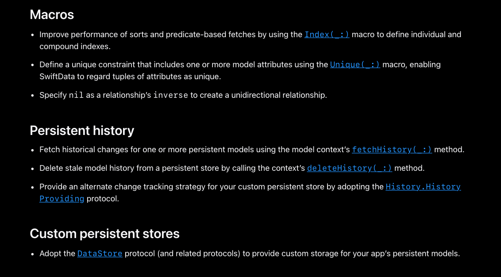
What’s new in SwiftUI
What’s new in Xcode 16
Support breakpoint resumption when downloading various Components.
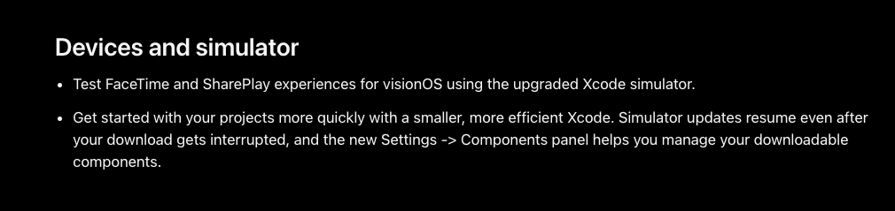
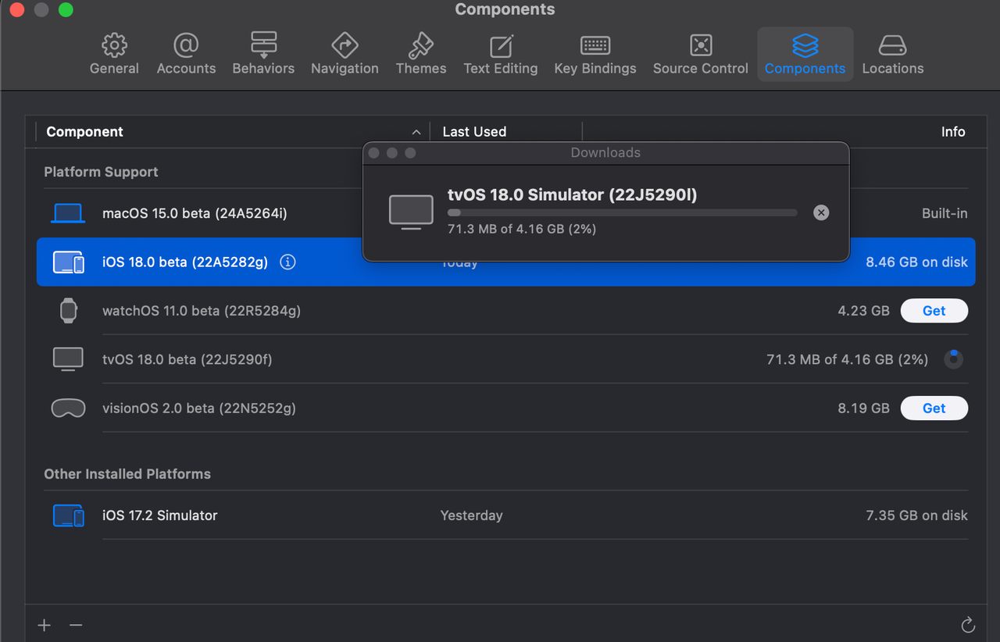
Added Other Components of Predictive Code Completion Model, which is mainly used for code prediction function
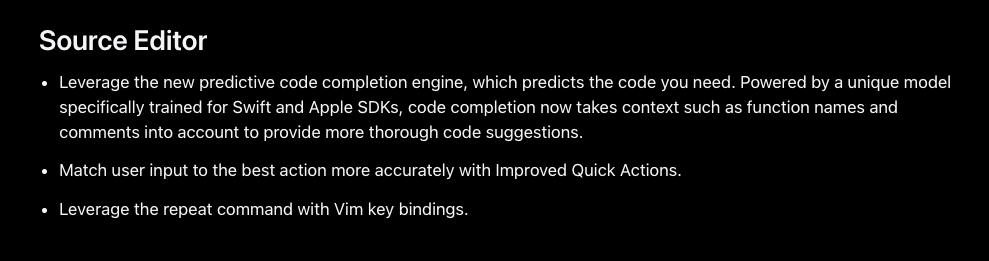
Added Swift Testing
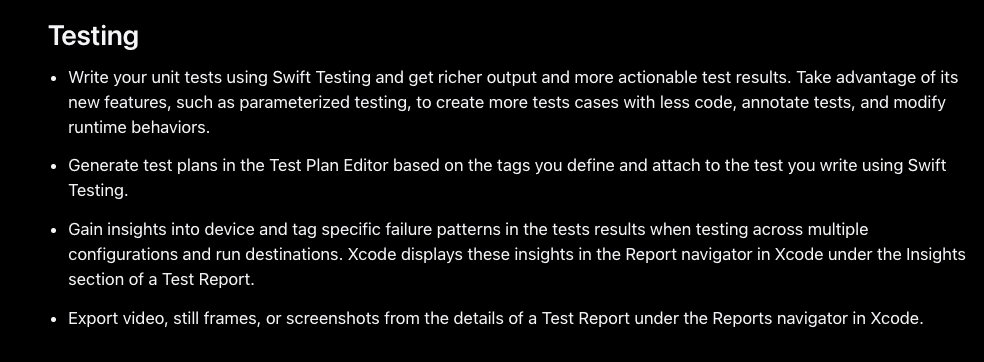
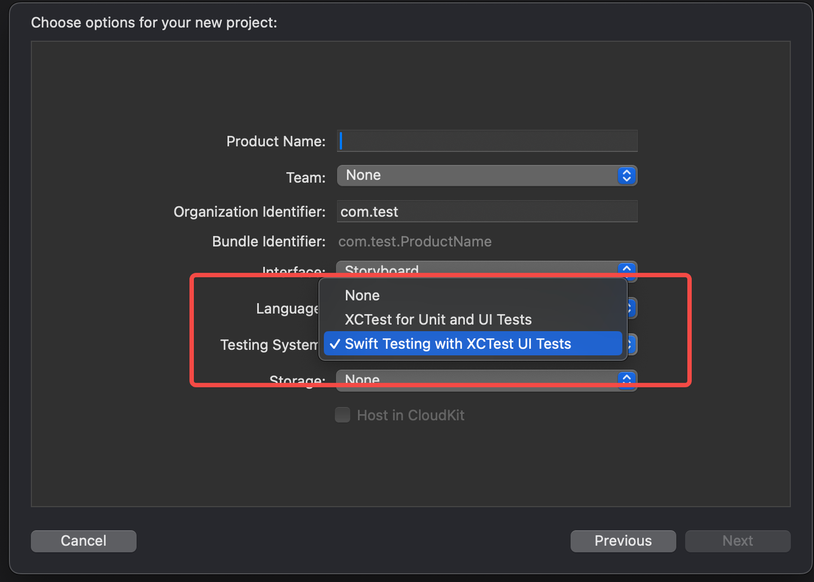
Project navigator New File/Template menu
New File –> New Empty File : The original functions are retained
New File from Template...: Swift source files can be created quickly
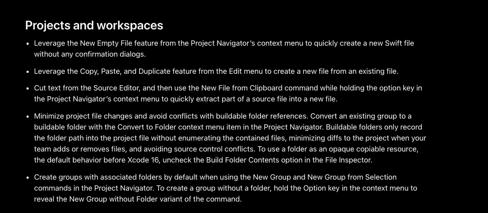
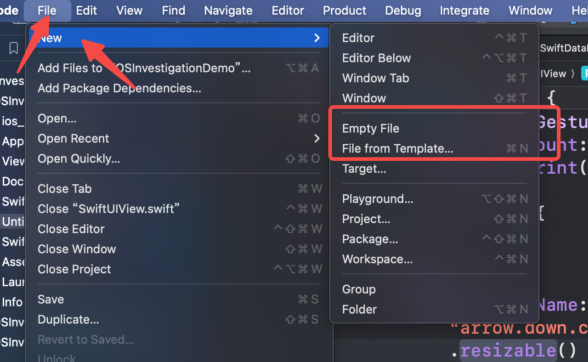
Asset management
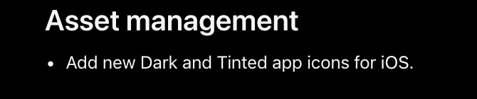
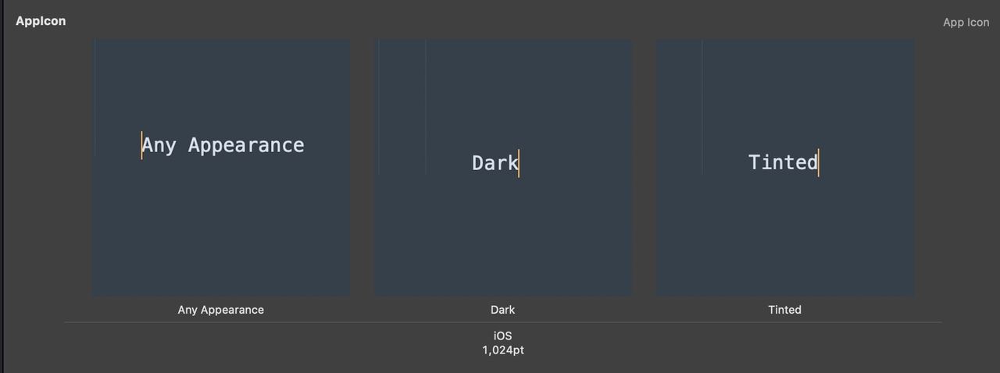
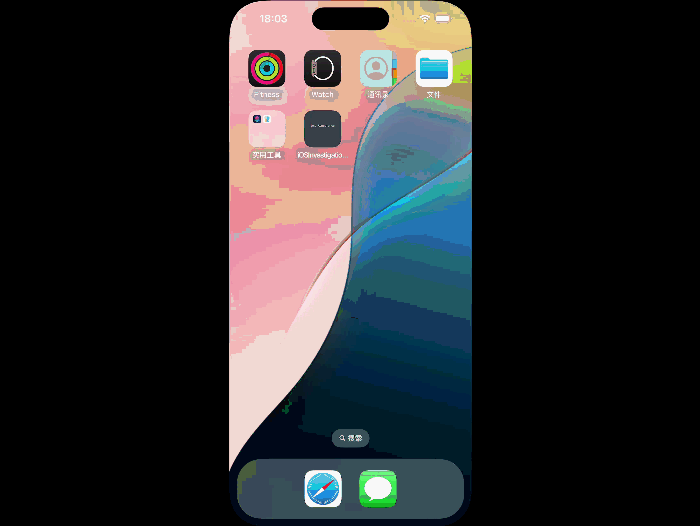

Comments